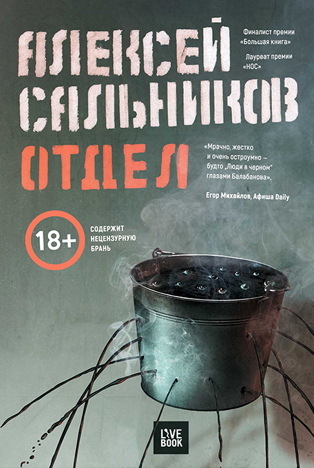

<!DOCTYPE html>
<html prefix="og: http://ogp.me/ns#"></html>
<head>
  <meta charset="utf-8"/>
  <meta name="viewport" content="width=device-width, initial-scale=1.0"/>
  <meta property="og:url" content="http://chernotrop.reviews/salnikov-department"/>
  <meta property="og:type" content="article"/>
  <meta property="og:title" content="Отдел"/>
  <meta property="og:description" content="Первый роман Алексея Сальникова удивительным образом вышел только после второго."/>
  <meta property="og:image" content="http://chernotrop.reviews/img/salnikov-department-preview.jpg"/>
  <meta property="og:image:width" content="1200"/>
  <meta property="og:image:height" content="600"/>
  <link href="https://fonts.googleapis.com/icon?family=Material+Icons" rel="stylesheet"/>
  <link rel="stylesheet"/><!-- Yandex.Metrika counter --> <script type="text/javascript" > (function(m,e,t,r,i,k,a){m[i]=m[i]||function(){(m[i].a=m[i].a||[]).push(arguments)}; m[i].l=1*new Date();k=e.createElement(t),a=e.getElementsByTagName(t)[0],k.async=1,k.src=r,a.parentNode.insertBefore(k,a)}) (window, document, "script", "https://mc.yandex.ru/metrika/tag.js", "ym"); ym(56951962, "init", { clickmap:true, trackLinks:true, accurateTrackBounce:true, webvisor:true, trackHash:true }); </script> <noscript><div></div></noscript> <!-- /Yandex.Metrika counter -->
  <title>Отдел</title>
<link href="./css/style.bundle.css" rel="stylesheet"></head>
<body class="body_light">
  <header class="header header_dark">
    <div class="header__logo">
      <div class="logo logo_dark"><a class="logo__link" href="/">ЧЕРНОТРОП</a></div>
    </div>
    <nav class="header__menu"><a class="menu-item menu-item_active" href="index.html" target="blank">главная</a><a class="menu-item" href="contacts.html">контакты</a><a class="menu-item" href="http://ttttt.me/blacktrope" target="blank">telegram-канал</a>
    </nav>
    <div class="header__menu_mobile" id="modeValue"><a href="menu.html">
        <svg xmlns="http://www.w3.org/2000/svg" width="24px" height="24px" viewBox="0 0 24 24">
          <path d="M0 0h24v24H0z" fill="none"></path>
          <path class="icon_white" d="M3 18h18v-2H3v2zm0-5h18v-2H3v2zm0-7v2h18V6H3z"></path>
        </svg></a>
    </div>
  </header>
  <article class="article">
    <div class="article__header">
      <h1 class="article__headline">Отдел</h1>
      <p class="article__description">Первый роман Алексея Сальникова удивительным образом вышел только после второго.</p>
    </div>
    <div class="article__content">
      <div class="article__content-row">
        <div class="article__content-left">
          <p>В мае в издательстве Livebook вышел «Отдел» Алексея Сальникова — роман о бывшем полицейском Игоре, который устраивается в отряд дознавателей под крылом ФСБ. Коллегами Игоря становятся странные люди: сын генерала Молодой отсиживается в отделе после уголовного дела, Михаила поймали на педофилии и с позором выгнали из органов, а бухгалтер Ринат Иосифович держится обособленно, старается не пить и живёт с женой-тираном. Но Игоря беспокоит не мутный кадровый состав, а сама суть работы: пару раз в месяц ему приходится допрашивать на первый взгляд невинных людей, после чего их обязательно убивают.</p>
          <p>Проза Алексея Сальникова — литературное открытие прошлого года. Роман «Петровы в гриппе и вокруг него» прошёл путь от публикации в саратовском журнале «Волга» до выхода в крупном издательстве АСТ, а сам Сальников получил приз критического сообщества премии «НОС» и стал лауреатом «Нацбеста-2018».</p>
        </div>
        <div class="article__content-right">
          <figure>
            <figcaption>Алексей Сальников «Отдел». Издательство «Livebook», 2018. 432 с.</figcaption>
          </figure>
        </div>
      </div>
      <div class="article__content-row">
        <div class="article__content-left">
          <p>В «Отделе» кроется хитрость: на самом деле роман не второй, а самый что ни на есть первый, так же напечатанный в «Волге» аж три года назад. В книге легко просматривается сальниковский стиль: герои, несмотря на жестокость, выглядят нелепыми и смешными, а реальность периодически сбоит и удаляется от нормы.</p>
          <p>Собственно, героями «Отдел» и заинтересует читателя — Сальников чутко улавливает типажи и приметы поколений. Молодой рубится в компьютерные игры, пытается казаться скептиком и троллем, но на самом деле любит возиться с детьми, употребляет лёгкие наркотики и никак не может понять родителей. Чем не портрет выведенного маркетологами «поколения Z»? Старожил отдела Игорь Васильевич, обладающий недюжинной силой, пьёт водку вёдрами, но при этом не ведёт себя агрессивно, предпочитая травить байки про многочисленных странных знакомых — классический добряк-здоровяк, на деле оказывающийся хладнокровным убийцей. Как и в «Петровых…», у главного героя есть отстранённый сын и непредсказуемая жена — и все они выведены нелогичными, противоречивыми, но всё же нормальными людьми. Отвращения не вызывает даже Фил-педофил.</p>
          <p>Однако, книгу делают успешной не только герои, но и сюжет. В «Отделе» он откровенно хромает и периодически скачет перед читателем как на американских горках. Полюбившиеся читателю персонажи исчезают внезапно и стремительно, будто по щелчку пальцев. Можно было бы списать столь резкие перепады сюжета на тягу Сальникова к абсурдизму или на приём, подчёркивающий опасность работы в спецслужбах, но сам автор в интервью признался, что один из поворотов он написал случайно в нетрезвом состоянии.</p>
          <p>Да и сами проблемы разрешаются сами собой, без приложения к ним усилий. Герои лишь пассивные наблюдатели, не желающие разрешить накопившиеся противоречия, их обитель — лестничная курилка, где они, подобно геополитикам в растянутых трико, курят и треплются ни о чём.</p>
          <p>В концовке романа Сальников вроде бы заговаривает с нами и о проблеме долга, и о безысходности человеческого существования, но целостная картина всё же не складывается. Претензий к Сальникову никаких: он оттачивал приёмы, специально переписал концовку под бумажное издание, но читать «Отдел» до «Петровых…» рискованно, потому что «Петровы…» однозначно сильнее. Небольшая группа людей может изучить с помощью «Отдела» рост писателя Сальникова в динамике, остальным же лучше дождаться конца лета, когда у прозаика выйдет третий, на этот раз свежий и пока ещё недописанный роман</p>
          <p>Подождём. Сальников обещал.</p>
          <div class="article-author">⚒︎<br/><span></span><a href="http://soshnikov-writing.art/" target="blank"><span>Артём Сошников</span></a></div>
          <div class="article-year"><span>Петроград</span>, <span>2018</span>
          </div>
        </div>
      </div>
    </div>
  </article>
<script type="text/javascript" src="./js/bundle.js"></script></body>